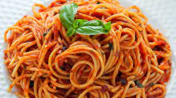

This is a very simple and delicious recipe that takes only 15 minutes to cook.
What can you add to spaghetti to make it taste good?
Here are the list of everyday pantry ingredients that add flavors to pasta:
Ingredients
- A good quality olive oil or extra virgin olive oil.
- Minced garlic.
- Salt.
- Ground black pepper.
- Dried red chili flakes.
Instructions
- Cook the spaghetti according to the package instructions until al dente.
Drain and set aside.
- Heat up a skillet and add the olive oil and butter.
Saute the garlic until aromatic, then add the spaghetti.
Season with salt, pepper, and chili flakes. Stir to combine well.
- Dish out, garnish with some parsley and serve immediately.
Return to top
Return to main page